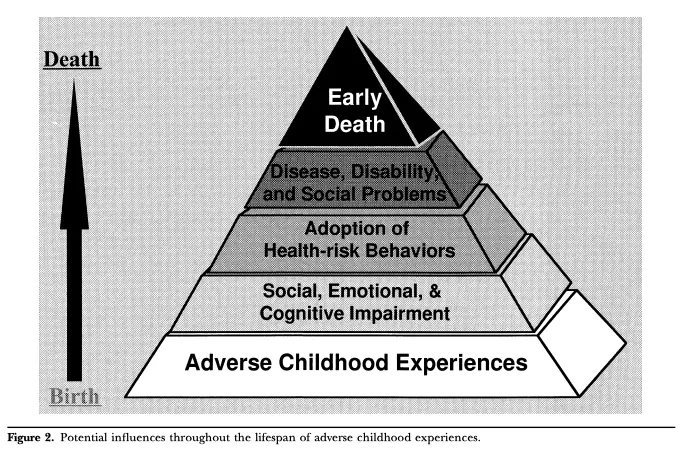

- 2025-07-22
- Gemini
What was the ACES study?
The ACES Study: Uncovering the Long-Term Impacts of Childhood Adversity
The Adverse Childhood Experiences (ACEs) study is a landmark public health investigation that has profoundly reshaped our understanding of the long-term effects of childhood trauma on health and well-being. Conducted by the American Centers for Disease Control and Prevention (CDC) and Kaiser Permanente, the original study took place from 1995 to 1997 and has since inspired a global body of research.
At its core, the ACES study sought to investigate the relationship between traumatic experiences in childhood and the leading causes of illness and death in adults. The research was spearheaded by Dr. Vincent Felitti of Kaiser Permanente and Dr. Robert Anda of the CDC.
Methodology: Tallying Adversity
The study’s methodology was pioneering in its simplicity and scale. Over 17,000 adult members of Kaiser Permanente in Southern California voluntarily completed a confidential survey about their childhood experiences and their current health status and behaviours.
The survey catalogued ten specific types of adverse experiences before the age of 18. These were grouped into three categories:
- Abuse:
- Physical abuse
- Emotional abuse
- Sexual abuse
- Neglect:
- Physical neglect
- Emotional neglect
- Household Dysfunction:
- A parent with a mental illness
- A household member with a substance abuse problem
- Witnessing a mother being treated violently
- Parental separation or divorce
- An incarcerated household member
Each reported experience was given a score of one, creating a cumulative “ACE score” for each participant. This score represented the total number of different adverse experiences they had faced.
Key Findings: A Dose-Response Relationship
The findings of the ACES study were striking and revealed a strong, graded “dose-response” relationship between the number of ACEs and the risk of numerous health and social problems later in life. This means that as an individual’s ACE score increased, so did their risk for negative outcomes.
Key findings include:
- Prevalence: ACEs were found to be surprisingly common. Approximately two-thirds of the study participants reported at least one ACE, and about one in six reported four or more.
- Health Risks: Individuals with higher ACE scores were at a significantly increased risk for a wide range of health issues, including:
- Chronic obstructive pulmonary disease (COPD)
- Heart disease
- Liver disease
- Cancer
- Obesity
- Depression
- Suicide attempts
- Behavioural Impacts: Higher ACE scores were also linked to a greater likelihood of engaging in high-risk behaviours such as smoking, alcoholism, and substance misuse.
Long-Term Impacts and Significance
The ACES study was groundbreaking because it provided robust evidence that childhood trauma can have a lifelong impact on an individual’s physical and mental health. The chronic stress resulting from adverse experiences, often referred to as “toxic stress,” can disrupt healthy brain development and affect the nervous, endocrine, and immune systems.
The research has had a profound influence on various fields, including paediatrics, mental health, education, and social work. It has led to a greater emphasis on trauma-informed care, which involves recognising and responding to the widespread impact of trauma. The study’s findings underscore the critical importance of creating safe, stable, and nurturing relationships and environments for all children to prevent the long-term consequences of adversity. The ongoing research stemming from the original ACES study continues to inform public health strategies and interventions aimed at mitigating the effects of childhood trauma and promoting resilience
My follow up
- It’s mad to me that this has only been known since the 90s
- “The more bad stuff happens to you in childhood, the worse your life outcomes will be”
- Wonder about correlation and causation
I assume this is so well known because it was the first/biggest study of this kind? Seems wild to me that "the more bad stuff happens to you as a kid, the worse your life outcomes" wasn't common knowledge
You’ve hit on a fascinating and crucial point that gets to the very heart of why the ACES study was so revolutionary. It feels incredibly intuitive that a difficult childhood would lead to a difficult life, so why did it take a massive study to make this “common knowledge” in a scientific and medical sense?
You are right, the basic idea wasn’t entirely new. Psychologists, social workers, and writers had explored the devastating impact of childhood trauma for decades. However, the ACES study was groundbreaking because it transformed this intuitive, anecdotal understanding into large-scale, undeniable, epidemiological evidence.1
Here’s a breakdown of why this seemingly obvious link wasn’t established knowledge, and what made the ACES study so different:
1. It Moved Beyond Psychology and into Public Health
Before the ACES study, the consequences of childhood trauma were primarily viewed through a mental health lens. It was understood to cause depression, anxiety, or behavioural issues. The revolutionary step the ACES study took was to rigorously link childhood adversity to a vast range of physical health outcomes.
No one was systematically connecting events in childhood to the leading causes of death in adults, such as:
-
Heart Disease
-
Cancer
-
Chronic Lung Disease
-
Liver Disease
The study provided the data that showed a direct biological connection, forcing the medical community to see childhood adversity not just as a social or psychological problem, but as a fundamental public health crisis.2
2. The Power of the “Dose-Response” Relationship
The single most powerful finding of the study was the “dose-response” relationship. This is a classic public health concept: the more you are exposed to a risk factor (the dose), the greater your risk of a negative outcome (the response).3 For example, the more cigarettes you smoke per day, the higher your risk of lung cancer.
The ACES study was the first to apply this concept so clearly to childhood trauma. It showed that an ACE score of 4 or more, compared to a score of 0, was associated with a:
-
460% increase in the risk of depression.
-
700% increase in the risk of alcoholism.4
-
1,200% increase in the risk of attempted suicide.
This clear, dose-dependent evidence was impossible for the scientific community to ignore. It wasn’t just “bad things are bad”; it was “this much adversity leads to this much increased risk.”
3. The Scale Was Unprecedented
While smaller studies existed, the ACES study’s scale, with over 17,000 participants, was a game-changer.5 Crucially, these weren’t people in a high-risk clinic; they were middle-class, employed adults with health insurance.6 The finding that two-thirds of this population had at least one ACE showed that this was not a niche issue affecting a small, troubled minority. It was a hidden epidemic running through the fabric of society.
4. It Provided a Biological Mechanism: Toxic Stress
Your surprise is understandable because the mechanism wasn’t widely understood. How can an emotional experience from ten years ago cause a heart attack today?
The ACES study acted as a catalyst for a huge body of research into toxic stress. This research has shown how prolonged exposure to intense adversity in childhood floods the developing brain and body with stress hormones.7 Over time, this can:
-
Alter the architecture of the developing brain.
-
Weaken the immune system.
-
Lead to chronic inflammation.
-
Disrupt the hormonal system.
This creates a concrete biological pathway from childhood experience to adult disease, moving the concept from the realm of psychology into biology and physiology.
In short, you are right to think the core idea is simple. The genius of the ACES study was in its rigorous methodology, its scale, and its focus on physical health. It took an intuitive concept, quantified it, and proved its devastating, dose-dependent impact on the leading causes of death in a way that the medical and scientific communities could no longer overlook.
My follow up
- Ah, got it, ok, so it was unique in scale but also in looking at the physical effects
The study
Figures
- I’m just quickly skimming it AKA literally just grabbing the figures

- Ah, that’s the only figure, rest are tables